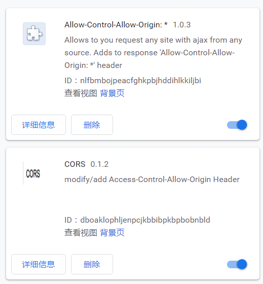

跨域详解
跨域详解
[[toc]]
什么是跨域
如下的错误图片，会让你有印象吧。
什么时候会出现跨域请求的相关错误
同时满足如下三个条件;
- 这个请求确实是跨域了。
- 你的浏览器'多管闲事'了。
- 这个请求的类型是 xhr（xmlhttprequest）。
条件 1：请求是跨域
这种场合很多,典型的前后端分离的开发大多使用单独部署上线前端和后端，这时，前端与后端肯定不在一个域中。
条件 2：你的浏览器多管闲事了
浏览器会遵守同源策略 。 抱歉，我不应该使用多管闲事这个贬义词的。因为:
"同源策略限制了从同一个源加载的文档或脚本如何与来自另一个源的资源进行交互。这是一个用于隔离潜在恶意文件的重要安全机制。"
我们也可以通过安装浏览器插件来决定是否让浏览器关闭同源策略检查，从而达到在本机可以跨域请求的目的。
如 chrome 浏览器中的插件：

条件 3：请求的类型是 xhr
网页中的很多标签都会请求外部的资源。当我们访问 baidu 的主页时，会看到类似的请求：

其中对各种类型的图片，css 文件，js 文件的请求都是跨域的，但它们的类型都不是xhr。而只有类型是 xhr 的请求，才可能会遇到跨域的问题。
解决跨域问题的思路
如上述，产生跨域问题肯定是同时满足了如上三个条件，那么，我们只需破坏掉一些条件即可。
- 请求是跨域
- 思路： 让请求不要跨域
- 方案： 代理请求。在本地也启动一个服务器，在收到本域的请求，把这个请求转发到目标服务器。
- 浏览器
多管闲事
- 通过配置浏览器，或者安装插件，让本机浏览器不需要遵守同源策略
- 方案：不可行。客户在使用自己的机器，自己的浏览器，你不可能要求客户都去安装插件。
- 请求是 xhr
- 思路： 让请求类型不要是 xhr 的
- 方案：jsonp
还有：
解决跨域问题
下面，我将从一个基本的场景出发，我们会一路遇到各种 error，并一路解决 error。
access to xmlhttprequest at XXXX from orgin YYYY has been blocked by CORS policy: NO 'Access-Control-Allow-Origin' header is present on the requested resource
以上错误解释起来是: 你从 YYYY 这个域(或者是接口什么的)向 XXXX(另一个域,或者是接口什么的)发起了 XMLHTTPRequest 请求，结果被墙(blocked)了，因为有 CORS policy。具体原因是：你请求的 XXXX 这个接口的并没有提供'Access-Control-Allow-Origin'信息。
给你一个例子，回忆一下：

我们先写一些代码，以复现这个问题。前端是：jquery 的 ajax,后端是 node express。 你可以在这里找到代码
前端代码
const baseUrl = 'http://localhost:3000'
var data = null
$.ajax({ url: baseUrl + '/get', type: 'get' }).then(rs => {
data = rs
})
后端代码
var express = require('express')
var app = express()
app.get('/get', function(req, res) {
res.json({ data: 'ok' })
console.log('/get .....')
})
app.listen(3000)
你分别启动前端（通过静态 http 服务器去打开网页，不是双击直接打开）和后端的 node 代码。 你就会发项这个错误已经在控制台中等着你了。下面，我们一起来解决这个问题。
区别简单请求和非简单请求
以下内容摘自阮一峰的博客
浏览器将CORS请求分成两类：简单请求（simple request）和非简单请求（not-so-simple request）。
只要同时满足以下两大条件，就属于简单请求。
（1) 请求方法是以下三种方法之一：
HEAD
GET
POST
（2）HTTP的头信息不超出以下几种字段：
Accept
Accept-Language
Content-Language
Last-Event-ID
Content-Type：只限于三个值application/x-www-form-urlencoded、multipart/form-data、text/plain
凡是不同时满足上面两个条件，就属于非简单请求。
简单请求的处理
如下，就是一个标准的简单请求
const baseUrl = 'http://localhost:3000'
var data = null
$.ajax({ url: baseUrl + '/get', type: 'get' }).then(rs => {
data = rs
})
在向http://localhost:3000/get发请求时，浏览器会自动加上一个特殊的字段Origin在请求头中。
Origin: 当前发出当前请求的网页的地址信息，例如：localhost:9090
这个相当于给这个请求打了一个特殊的标记，如果从目标服务器接口http://localhost:3000/get给回的响应信息头中，没有'Access-Control-Allow-Origin'字段，或者其中的值不包含当前发出当前请求的网页的地址信息则报错误。
access to xmlhttprequest at XXXX from orgin YYYY has been blocked by CORS policy: NO 'Access-Control-Allow-Origin' header is present on the requested resource
解决办法是在服务器端的响应中设置这个字段。在 express 中，我们通过 res.header 去设置即可。
app.get('/get', function(req, res) {
res.header('Access-Control-Allow-Origin', '*') // 或者是全匹配 http://localhost:9090
res.json({ data: 'ok' })
console.log('/get .....')
})
以上*可以理解为通配符，表示全部的来源都 Ok 的，你也可以写成某个具体的来源，例如'http://localhost:9090'，当然，这就表示服务器的/get接口只支持这个地址的来的跨域请求，如果你从其他的端口发请求过来，同样会报错。
问题： 在浏览器报了这个错误，那么服务器端是否收到了请求呢？
答案是：服务器端收到了。你可以通过观察 node 端的输出来看，确实输出了 这个日志信息："/get...." 。也就是说请求从浏览器发出来，服务器也处理了，并给了返回值，整个过程的状态是正常的。但是，浏览器自己在收到返回值信息时，一检查，发现头信息少了东西，给报错了。
非简单请求
如果这个请求的类型是非简单请求，则整个过程要分成两步：
- 发出预检命令。
- 如果预检命令通过了，发出真实的命令。
示例
我们设置一个特殊的 contentType，它的值是 'application/json',根据我们上面的定义，此时的请求类型就是一个非简单请求了。
前端加一个 post 请求
const baseUrl = 'http://localhost:3000'
var data = null
$.ajax({url: baseUrl + '/post1',
type: 'post'
}).then(rs => {
data = rs
})
后端代码：
app.post('/post1', function(req, res) {
res.header('Access-Control-Allow-Origin', '*') // http://sps.ls.jd.com:8080 http://localhost:8080
res.json({ data: 'ok' })
// console.log('/post .....')
})
同前面的分析，由于这一个简单请求，我们只需要在服务器端设置 acccess-control-allow-orgin 就可以了。
下面，改成非简单请求。设置 contentType 值是 application/json
const baseUrl = 'http://localhost:3000'
var data = null
$.ajax({
url: baseUrl + '/post1',
contentType: 'application/json',
type: 'post'
}).then(rs => {
data = rs
})
保持后端代码不变，此时，你会遇到问题：
jquery-3.3.1.min.js:2 OPTIONS http://localhost:3000/post1 net::ERR_CONNECTION_REFUSED
原因是非简单请求会先发出一个类型为 OPTIONS 的请求（预检命令），当这个请求被正确处理之后，才会发出真正的请求。现在出错误的原因是在服务器端没有配置这个接口相应。下面，我们在服务器端补充一个响应：
app.options('/post1', function(req, res) {
res.end()
})
此时会得到另一个错误:
Access to XMLHttpRequest at 'http://localhost:3000/post1' from origin 'http://127.0.0.1:9090' has been blocked by CORS policy: Response to preflight request doesn't pass access control check: No 'Access-Control-Allow-Origin' header is present on the requested resource.
同时，可以在 network 面板中看到：

说明，确实是发出了一个类型为 options 的请求。接下来，我们回过头来处理这个错误。上面的这个错误看起来非常眼熟嘛，我们按照上面的解决方案：给 res 设置 header 处理。
修改 options 响应如下：
app.options('/post1', function(req, res) {
res.header('Access-Control-Allow-Origin', '*')
res.end()
})
再访问，你会遇到一个新的错误信息，是有关Access-Control-Allow-Headers的：
Access to XMLHttpRequest at 'http://localhost:3000/post1' from origin 'http://127.0.0.1:9090' has been blocked by CORS policy: Request header field content-type is not allowed by Access-Control-Allow-Headers in preflight response.
意思是你在 ajax 请求中设置了 contentType: 'application/json',但是，现在收到的响应头中却没有找到 content-type 这个信息。 ok，我们在 options 响应中补上一句：
res.header('Access-Control-Allow-Headers', 'Content-Type')
整体的代码如下：
app.options('/post1', function(req, res) {
res.header('Access-Control-Allow-Origin', '*')
res.header('Access-Control-Allow-Headers', 'Content-Type'); //新加的
res.end()
})
app.post('/post1', function(req, res) {
res.header('Access-Control-Allow-Origin', '*')
res.json({ data: 'ok' })
console.log('/post .....')
})
到此为止，我们终于成功了。

总结一下，非简单请求会发两次请求，先是 options，再是真正的请求。 你可能会想了，为啥要发两次，为啥每次都要发两次？
指定本次预检请求的有效期
Access-Control-Max-Age该字段可选，用来指定本次预检请求的有效期，单位为秒。在此期间，不用发出另一条预检请求。
我们添加一条设置res.header('Access-Control-Max-Age', '3600')在一个小时内不重复发预检指令。
app.options('/post1', function(req, res) {
res.header('Access-Control-Max-Age', '3600')
res.header('Access-Control-Allow-Origin', '*') // http://sps.ls.jd.com:8080 http://localhost:8080
res.header('Access-Control-Allow-Headers', 'Content-Type')
res.end()
})
然后，你应该可以发现 options 不见了，现在只有一条请求了。注意：控制面板中的disable cache开关可以帮助你观察这个细节。

设置特殊的请求头
在上例的基础上，我们设置一个自定义的 header
$.ajax({
contentType: 'application/json',
headers: {
header1: 'AAA'
},
url: baseUrl + '/post1',
type: 'post'
}).then(rs => {
data = rs
})
你会得到一个新的错误，如下：
Access to XMLHttpRequest at 'http://localhost:3000/post1' from origin 'http://127.0.0.1:9090' has been blocked by CORS policy: Request header field header1 is not allowed by Access-Control-Allow-Headers in preflight response.
解决办法类似：少什么，就加什么。如下，我们把 header1 加入到Access-Control-Allow-Headers字段中即可：
app.options('/post1', function(req, res) {
res.header('Access-Control-Max-Age', '3600')
res.header('Access-Control-Allow-Origin', '*') // http://sps.ls.jd.com:8080 http://localhost:8080
res.header('Access-Control-Allow-Headers', 'Content-Type,header1')
res.end()
})
带 cookie
让 ajax 请求带上 cookie,需要设置 xhrFields:{withCredentials:true} 。我们加上这句之后，如下：
$.ajax({
contentType: 'application/json',
headers: {
header1: 'AAA'
},
xhrFields: {
withCredentials: true
},
url: baseUrl + '/post1',
type: 'post'
}).then(rs => {
data = rs
})
现在又有一个新的错误：
Access to XMLHttpRequest at 'http://localhost:3000/post1' from origin 'http://127.0.0.1:9090' has been blocked by CORS policy: Response to preflight request doesn't pass access control check: The value of the 'Access-Control-Allow-Origin' header in the response must not be the wildcard '*' when the request's credentials mode is 'include'. The credentials mode of requests initiated by the XMLHttpRequest is controlled by the withCredentials attribute.
错误的意思是指由于使用了 cookie，这里的 Access-Control-Allow-Origi值不能是*, 而并是具体的地址。所以我们改成如下：
app.options('/post1', function(req, res) {
res.header('Access-Control-Max-Age', '3600')
res.header('Access-Control-Allow-Origin', 'http://127.0.0.1:9090')
res.header('Access-Control-Allow-Headers', 'Content-Type,header1')
res.end()
})
再错
Access to XMLHttpRequest at 'http://localhost:3000/post1' from origin 'http://127.0.0.1:9090' has been blocked by CORS policy: Response to preflight request doesn't pass access control check: The value of the 'Access-Control-Allow-Credentials' header in the response is '' which must be 'true' when the request's credentials mode is 'include'. The credentials mode of requests initiated by the XMLHttpRequest is controlled by the withCredentials attribute.
再加一句res.header('Access-Control-Allow-Credentials', true)
app.options('/post1', function(req, res) {
res.header('Access-Control-Max-Age', '3600')
res.header('Access-Control-Allow-Origin', 'http://127.0.0.1:9090') // http://sps.ls.jd.com:8080 http://localhost:8080
res.header('Access-Control-Allow-Headers', 'Content-Type,header1')
res.header('Access-Control-Allow-Credentials', true)
res.end()
})